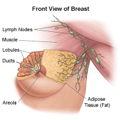
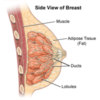

Menstrual Cups
Menstrual Cups Tampons
Tampons Panty Liner
Panty Liner Sanitary Napkins
Sanitary Napkins CHAPTER 4 ~ HEALTH
Breast Health
- Breast self-examination: A breast self-exam is something a woman does at home to look for changes or problems in the breast tissue. Many women feel that doing this is important to their health.
However, experts do not agree about the benefits of breast self-exams in finding breast cancer or saving lives. Talk to your health care provider about whether breast self-exams are right for you.
The best time to do a monthly breast self-exam is about 3 to 5 days after your period starts. Do it at the same time every month. Your breasts are not as tender or lumpy at this time in your monthly cycle.
If you have gone through menopause, do your exam on the same day every month.
Begin by lying on your back. It is easier to examine all breast tissue if you are lying down.
 
How do I do a self-breast exam?
There are a few different ways to perform a breast exam at home:
1. Looking in a mirror: Take off your shirt and bra and stand in front of a mirror. Put your arms down by your sides. Look for any changes in breast shape, breast swelling, dimpling in your skin or changes in the position of your nipples. Next, raise your arms high over your head and look for the same things. Finally, put your hands on your hips and press firmly to make your chest muscles flex. Look for the same changes again. Be sure to look at both breasts.
2. Manual breast self-exam while standing: your shirt and bra. Use your right hand to examine your left breast, then vice versa. With the pads of your three middle fingers, press on every part of one breast. Use light pressure, then medium, then firm. Feel for any lumps, thick spots or other changes. A circular pattern may help you make sure you hit every spot. Then, press the tissue nearest your armpit. Be sure to check under your areola (area around your nipple) and then squeeze your nipple to check for discharge. Repeat the steps on the other side. Many people perform a standing self-exam while in the shower.
3. Manual breast self-exam while lying down: you lie down, your breast tissue spreads more evenly. This makes it a good position to feel for changes, especially if your breasts are large. Lie down and put a pillow under your right shoulder. Place your right arm behind your head. Using your left hand, apply the same technique as option 2, using the pads of your middle fingers to press all parts of your breast tissue and under your armpit. Finally, swap the pillow to the other side, and check your other breast and armpit. Be sure to check under your areola and then squeeze your nipple to check for discharge. Keep in mind that your breast tissue extends to your armpit, collarbone and top of your abdomen. Your breast tissue isn’t just your breast cleavage and nipples.